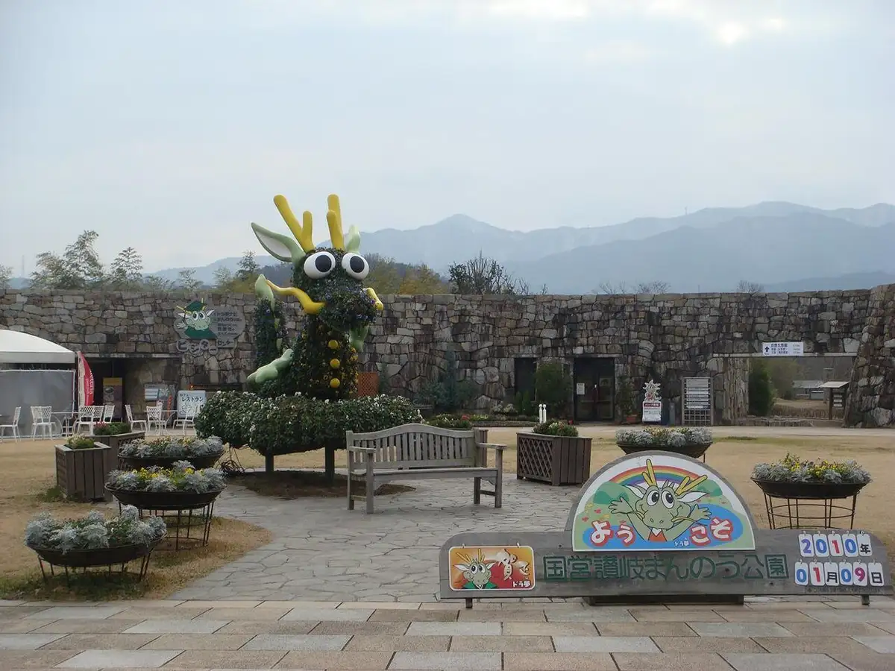
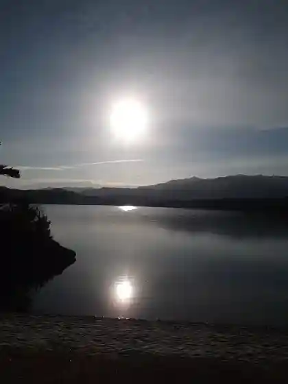
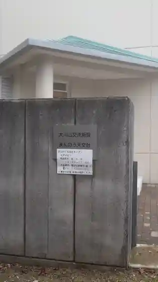
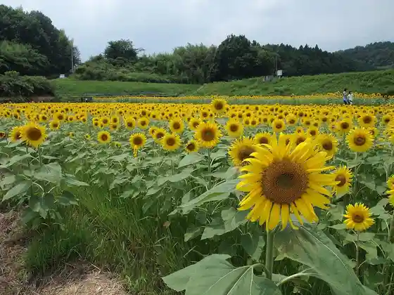
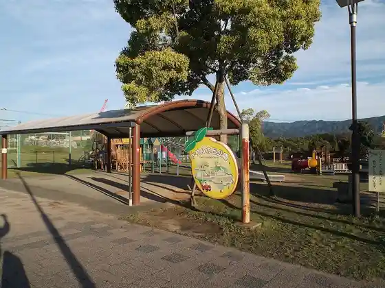

Manno
Manno · Kagawa
Manno
Highlighted on the Kagawa map.

Stay
Yuyama So Asan Kotonami
Seiryu Iori
MYTH-Y
Dining
Green Park Manno
Haniru
Sanshin Udon
Kagawa
Miyazaki Jidori Hisashi
sevenplace Koji Tokoro
Furutsusando Senmonten Yemonya
Soba Tokoro Oide Ie
Jun Na Shungyo
Shokusai Chaya Hana Rin
Nagata Udon
Okada Udon
Yama Yoshi Sa Bun Mise
Umaka Bo no Shokutaku
Hotto Shoppu Taka no
Oran Ie
Onsen
Yuyama So Asan Kotonami Public Bath
Experience
Roadside Station Kotonami
Sights
Kokuei Sanuki Manno Park
Manno Ike

Manno Tenmondai

Himawari Village

Karin no Oka Park

Kobashi Falls